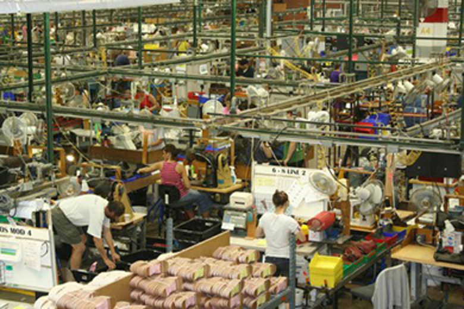

What Is Economics, and Why Is It Important?
1 Learning Objectives
By the end of this section, you will be able to:
- Discuss the importance of studying economics
- Explain the relationship between production and division of labor
- Evaluate the significance of scarcity
Economics is the study of how humans make decisions in the face of scarcity. These can be individual decisions, family decisions, business decisions or societal decisions. If you look around carefully, you will see that scarcity is a fact of life. Scarcity means that human wants for goods, services and resources exceed what is available. Resources, such as labor, tools, land, and raw materials are necessary to produce the goods and services we want but they exist in limited supply. Of course, the ultimate scarce resource is time- everyone, rich or poor, has just 24 expendable hours in the day to earn income to acquire goods and services, for leisure time, or for sleep. At any point in time, there is only a finite amount of resources available.
Think about it this way: In 2015 the labor force in the United States contained over 158 million workers, according to the U.S. Bureau of Labor Statistics. The total land area was 3,794,101 square miles. While these are certainly large numbers, they are not infinite. Because these resources are limited, so are the numbers of goods and services we produce with them. Combine this with the fact that human wants seem to be virtually infinite, and you can see why scarcity is a problem.
2 Introduction to FRED
Data is very important in economics because it describes and measures the issues and problems that economics seek to understand. A variety of government agencies publish economic and social data. For this course, we will generally use data from the St. Louis Federal Reserve Bank’s FRED database. FRED is very user friendly. It allows you to display data in tables or charts, and you can easily download it into spreadsheet form if you want to use the data for other purposes. The FRED website includes data on nearly 400,000 domestic and international variables over time, in the following broad categories:
- Money, Banking & Finance
- Population, Employment, & Labor Markets (including Income Distribution)
- National Accounts (Gross Domestic Product & its components), Flow of Funds, and International Accounts
- Production & Business Activity (including Business Cycles)
- Prices & Inflation (including the Consumer Price Index, the Producer Price Index, and the Employment Cost Index)
- International Data from other nations
- U.S. Regional Data
- Academic Data (including Penn World Tables & NBER Macrohistory database)
For more information about how to use FRED, see the variety of videos on YouTube starting with this introduction.
If you still do not believe that scarcity is a problem, consider the following: Does everyone require food to eat? Does everyone need a decent place to live? Does everyone have access to healthcare? In every country in the world, there are people who are hungry, homeless (for example, those who call park benches their beds, as Figure 1 shows), and in need of healthcare, just to focus on a few critical goods and services. Why is this the case? It is because of scarcity. Let’s delve into the concept of scarcity a little deeper, because it is crucial to understanding economics.
3 The Problem of Scarcity
Think about all the things you consume: food, shelter, clothing, transportation, healthcare, and entertainment. How do you acquire those items? You do not produce them yourself. You buy them. How do you afford the things you buy? You work for pay. If you do not, someone else does on your behalf. Yet most of us never have enough income to buy all the things we want. This is because of scarcity. So how do we solve it?
LINK IT UP
Visit this website to read about how the United States is dealing with scarcity in resources.
Every society, at every level, must make choices about how to use its resources. Families must decide whether to spend their money on a new car or a fancy vacation. Towns must choose whether to put more of the budget into police and fire protection or into the school system. Nations must decide whether to devote more funds to national defense or to protecting the environment. In most cases, there just isn’t enough money in the budget to do everything. How do we use our limited resources the best way possible, that is, to obtain the most goods and services we can? There are a couple of options. First, we could each produce everything we each consume. Alternatively, we could each produce some of what we want to consume, and “trade” for the rest of what we want. Let’s explore these options. Why do we not each just produce all of the things we consume? Think back to pioneer days, when individuals knew how to do so much more than we do today, from building their homes, to growing their crops, to hunting for food, to repairing their equipment. Most of us do not know how to do all—or any—of those things, but it is not because we could not learn. Rather, we do not have to. The reason why is something called the division and specialization of labor, a production innovation first put forth by Adam Smith (Figure 2) in his book, The Wealth of Nations.
4 The Division of and Specialization of Labor
The formal study of economics began when Adam Smith (1723–1790) published his famous book The Wealth of Nations in 1776. Many authors had written on economics in the centuries before Smith, but he was the first to address the subject in a comprehensive way. In the first chapter, Smith introduces the concept of division of labor, which means that the way one produces a good or service is divided into a number of tasks that different workers perform, instead of all the tasks being done by the same person.
To illustrate division of labor, Smith counted how many tasks went into making a pin: drawing out a piece of wire, cutting it to the right length, straightening it, putting a head on one end and a point on the other, and packaging pins for sale, to name just a few. Smith counted 18 distinct tasks that different people performed—all for a pin, believe it or not!
Modern businesses divide tasks as well. Even a relatively simple business like a restaurant divides the task of serving meals into a range of jobs like top chef, sous chefs, less-skilled kitchen help, servers to wait on the tables, a greeter at the door, janitors to clean up, and a business manager to handle paychecks and bills—not to mention the economic connections a restaurant has with suppliers of food, furniture, kitchen equipment, and the building where it is located. A complex business like a large manufacturing factory, such as the shoe factory (Figure 3), or a hospital can have hundreds of job classifications.

5 Why the Division of Labor Increases Production
When we divide and subdivide the tasks involved with producing a good or service, workers and businesses can produce a greater quantity of output. In his observations of pin factories, Smith noticed that one worker alone might make 20 pins in a day, but that a small business of 10 workers (some of whom would need to complete two or three of the 18 tasks involved with pin-making), could make 48,000 pins in a day. How can a group of workers, each specializing in certain tasks, produce so much more than the same number of workers who try to produce the entire good or service by themselves? Smith offered three reasons.
First, specialization in a particular small job allows workers to focus on the parts of the production process where they have an advantage. (In later chapters, we will develop this idea by discussing comparative advantage.) People have different skills, talents, and interests, so they will be better at some jobs than at others. The particular advantages may be based on educational choices, which are in turn shaped by interests and talents. Only those with medical degrees qualify to become doctors, for instance. For some goods, geography affects specialization. For example, it is easier to be a wheat farmer in North Dakota than in Florida, but easier to run a tourist hotel in Florida than in North Dakota. If you live in or near a big city, it is easier to attract enough customers to operate a successful dry cleaning business or movie theater than if you live in a sparsely populated rural area. Whatever the reason, if people specialize in the production of what they do best, they will be more effective than if they produce a combination of things, some of which they are good at and some of which they are not.
Second, workers who specialize in certain tasks often learn to produce more quickly and with higher quality. This pattern holds true for many workers, including assembly line laborers who build cars, stylists who cut hair, and doctors who perform heart surgery. In fact, specialized workers often know their jobs well enough to suggest innovative ways to do their work faster and better.
A similar pattern often operates within businesses. In many cases, a business that focuses on one or a few products (sometimes called its “core competency”) is more successful than firms that try to make a wide range of products.
Third, specialization allows businesses to take advantage of economies of scale, which means that for many goods, as the level of production increases, the average cost of producing each individual unit declines. For example, if a factory produces only 100 cars per year, each car will be quite expensive to make on average. However, if a factory produces 50,000 cars each year, then it can set up an assembly line with huge machines and workers performing specialized tasks, and the average cost of production per car will be lower. The ultimate result of workers who can focus on their preferences and talents, learn to do their specialized jobs better, and work in larger organizations is that society as a whole can produce and consume far more than if each person tried to produce all of their own goods and services. The division and specialization of labor has been a force against the problem of scarcity.
6 Trade and Markets
Specialization only makes sense, though, if workers can use the pay they receive for doing their jobs to purchase the other goods and services that they need. In short, specialization requires trade.
You do not have to know anything about electronics or sound systems to play music—you just buy an iPod or MP3 player, download the music, and listen. You do not have to know anything about artificial fibers or the construction of sewing machines if you need a jacket—you just buy the jacket and wear it. You do not need to know anything about internal combustion engines to operate a car—you just get in and drive. Instead of trying to acquire all the knowledge and skills involved in producing all of the goods and services that you wish to consume, the market allows you to learn a specialized set of skills and then use the pay you receive to buy the goods and services you need or want. This is how our modern society has evolved into a strong economy.
7 Why Study Economics?
Now that you have an overview on what economics studies, let’s quickly discuss why you are right to study it. Economics is not primarily a collection of facts to memorize, although there are plenty of important concepts to learn. Instead, think of economics as a collection of questions to answer or puzzles to work. Most importantly, economics provides the tools to solve those puzzles.
Consider the complex and critical issue of education barriers on national and regional levels, which affect millions of people and result in widespread poverty and inequality. Governments, aid organizations, and wealthy individuals spend billions of dollars each year trying to address these issues. Nations announce the revitalization of their education programs; tech companies donate devices and infrastructure, and celebrities and charities build schools and sponsor students. Yet the problems remain, sometimes almost as pronounced as they were before the intervention. Why is that the case? In 2019, three economists—Esther Duflo, Abhijit Banerjee, and Michael Kremer—were awarded the Nobel Prize for their work to answer those questions. They worked diligently to break the widespread problems into smaller pieces, and experimented with small interventions to test success. The award citation credited their work with giving the world better tools and information to address poverty and improve education. Esther Duflo, who is the youngest person and second woman to win the Nobel Prize in Economics, said, “We believed that like the war on cancer, the war on poverty was not going to be won in one major battle, but in a series of small triumphs. . . . This work and the culture of learning that it fostered in governments has led to real improvement in the lives of hundreds of millions of poor people.”
As you can see, economics affects far more than business. For example:
- Virtually every major problem facing the world today, from global warming, to world poverty, to the conflicts in Syria, Afghanistan, and Somalia, has an economic dimension. If you are going to be part of solving those problems, you need to be able to understand them. Economics is crucial.
- It is hard to overstate the importance of economics to good citizenship. You need to be able to vote intelligently on budgets, regulations, and laws in general. When the U.S. government came close to a standstill at the end of 2012 due to the “fiscal cliff,” what were the issues? Did you know?
- A basic understanding of economics makes you a well-rounded thinker. When you read articles about economic issues, you will understand and be able to evaluate the writer’s argument. When you hear classmates, co-workers, or political candidates talking about economics, you will be able to distinguish between common sense and nonsense. You will find new ways of thinking about current events and about personal and business decisions, as well as current events and politics.
The study of economics does not dictate the answers, but it can illuminate the different choices.